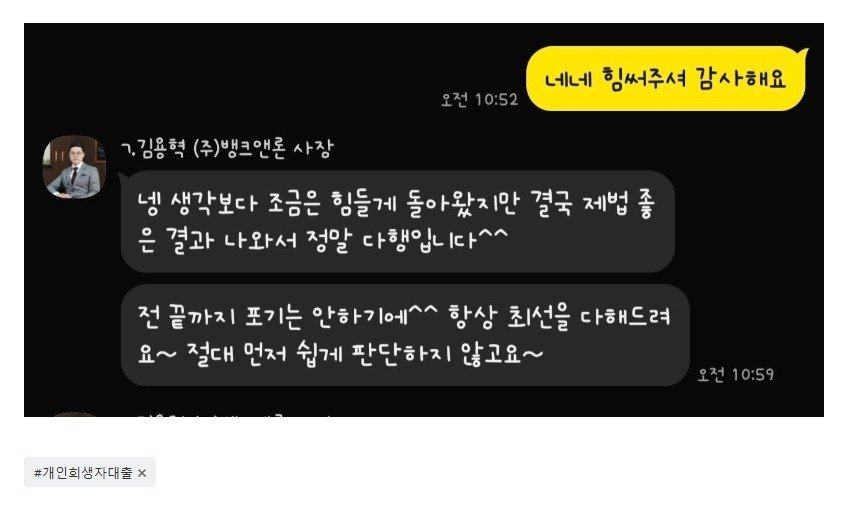

[개인회생자대출 ] 최근 1500만원 대출 후 다시 변제금 미납이 샇였는데도 또 1300만원 대출 승인 ! 감사합니다
재직 5년 정규직 / 연봉 4200 / 회생회차 16회중 미납 3회
10월에도 미납 정리로 1500대출 김용혁 이사님,이현섭과장님
통해 진행했는데 이번에도 미납 발생하여.. 대출진행했네요
어렵다고도 하셨고 대출승인금액도 좀 작을거라 생각했는데
1300만원이ㅏ.. 필요자금 1200만원 대출 진행했네요..
끝까지 알아봐주셔서 너무 감사합니다

https://cafe.naver.com/cityman88/309988